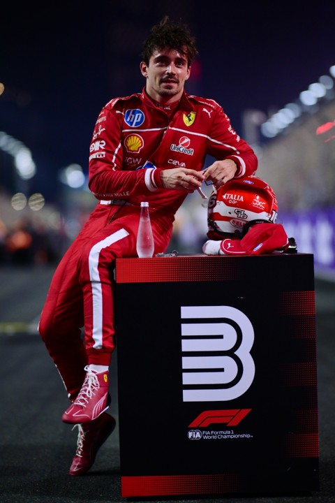

new In photos: Charles Leclerc's F1 career WHATEVER THE POSITION IS AT STAKE, YOU'VE GOT TO DO YOUR ABSOLUTE BEST AS A DRIVER WHETHER YOU'RE FIGHTING FOR THE FIFTH, FOURTH OR FIRST POSITION. Charles Leclerc Born in the Mediterranean idyll of Monaco, Leclerc arrived in F1 on a tidal wave of expectation. Practically peerless on his way to the GP3 and Formula 2 crowns, he showcased a dazzling array of skills from scorching pole positions, commanding victories – even when his car caught fire twice at Silverstone – to an ability to muscle his way through the pack. Winning back-to-back championships also taught Leclerc how to handle pressure, another useful tool in the big pond of Formula 1 racing. Stepping up to F1 in 2018, Leclerc showed flashes of ballistic pace on Saturdays and racing brilliance on Sundays, dragging his Sauber beyond its limits – and earning himself a money-can’t-buy race seat at Ferrari for 2019, stepping into the shoes of the Scuderia’s last world champion, Kimi Raikkonen.
